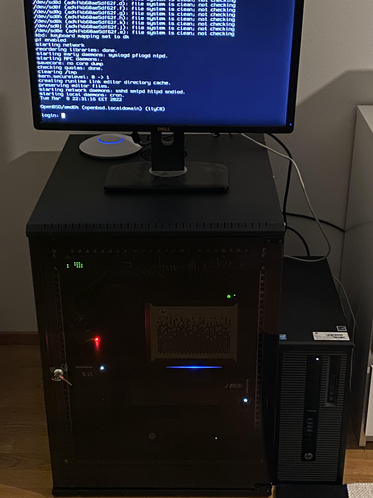

This page is dedicated to my homelab. This is where I do all the learning by running services and doing experiments.
The two lenovo PCs on the left of the rack run debian. I use them to learn about stuff like docker and ansible.
The HP workstation on the bottom runs Windows Server 2022 and I use it to learn about Active Directory, Windows Deployment Services and the like.
The HP Microserver on the right is my firewall/router which runs OPNsense. The Pi on top runs Pi-hole.
There is a Cisco Catalyst 2960-X, a TP-Link 1Gbps managed switch and a patch panel on top of the rack. I use the OPNsense box and the switches together to learn about network administration.
Last but not least is the HP workstation on the right, which runs OpenBSD. It actually hosts this website.
All of this gear I've gotten for free from my past/current workplace. The switch, rack and Pi I paid for myself.